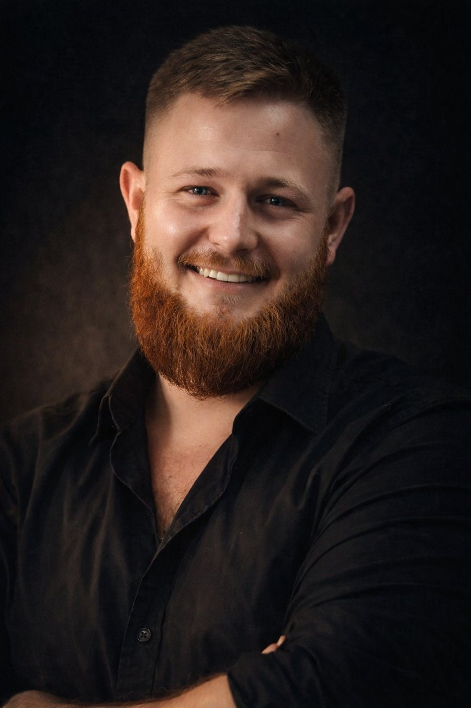

whoami
Izak de Kock
Built by someone who understands the problemGebou deur iemand wat die probleem verstaan
Izak is a farm boy from Ventersdorp who has loved computers since he was small. By day he is a financial and estate planning adviser; the rest of the time he farms and writes code. Most of what IDK Tech makes started as a problem he saw on a farm or in his own office, and every product runs on his own family first: the first Farm Sentinel node runs on his father's farm, and the TV channel runs in his grandmother's lounge. He lives in Potchefstroom and runs IDK Tech as part of IDK Capital, his main company.
Izak is 'n boerseun van Ventersdorp wat van kleins af lief is vir rekenaars. Bedags is hy 'n finansiële en boedelbeplanningsadviseur; die res van die tyd boer hy en skryf hy kode. Die meeste van wat IDK Tech maak, het begin as 'n probleem wat hy op 'n plaas of in sy eie kantoor raakgesien het, en elke produk loop eerste op sy eie familie: die eerste Farm Sentinel-nodus loop op sy pa se plaas, en die TV-kanaal loop in sy ouma se sitkamer. Hy woon in Potchefstroom en bedryf IDK Tech as deel van IDK Capital, sy hoofmaatskappy.
- BaseBasis
- Potchefstroom, North WestPotchefstroom, Noordwes
- RootsWortels
- A farm near Ventersdorp'n Plaas naby Ventersdorp
- BuildsBou
- Software · hardware · AISagteware · hardeware · KI
- Part ofDeel van
- IDK Capital
ProcessProses
From problem to working solutionVan probleem tot werkende oplossing
The same four steps for every build, from a farm alarm to a payslip.
Dieselfde vier stappe vir elke bouwerk, van 'n plaasalarm tot 'n betaalstrokie.
$ observe
Start on siteBegin op die terrein
We begin where the problem lives: the farm, the office, the pump house. Only then do we write code.
Ons begin waar die probleem is: die plaas, die kantoor, die pomphuis. Eers dan skryf ons kode.
$ prototype
Build the smallest useful thingBou die kleinste ding wat werk
A working tool in real hands beats a perfect plan. Prototypes go into the field early, and the field decides what comes next.
'n Werkende hulpmiddel in regte hande klop 'n perfekte plan. Prototipes gaan vroeg veld toe, en die veld besluit wat volgende kom.
$ harden
Engineer for real conditionsOntwerp vir regte toestande
Weak signal, dust, heat and load-shedding are part of the brief from day one.
Swak sein, stof, hitte en beurtkrag is van dag een af deel van die opdrag.
$ maintain
Look after itSorg daarvoor
We support what we build, and we're a WhatsApp away when something needs to change.
Ons ondersteun wat ons bou, en ons is 'n WhatsApp ver as iets moet verander.